Common Problems
News Aggregator
Scaling Reads
Understanding the Problem
📰 What is Google News?
Google News is a digital service that aggregates and displays news articles from thousands of publishers worldwide in a scrollable interface for users to stay updated on current events.
Functional Requirements
Core Requirements
- Users should be able to view an aggregated feed of news articles from thousands of source publishers all over the world
- Users should be able to scroll through the feed "infinitely"
- Users should be able to click on articles and be redirected to the publisher's website to read the full content
Below the line (out of scope):
- Users should be able to customize their feed based on interests
- Users should be able to save articles for later reading
- Users should be able to share articles on social media platforms

Non-Functional Requirements
For a news platform, availability is prioritized over consistency, as users would prefer to see slightly outdated content rather than no content at all.
Core Requirements
- The system should prioritize availability over consistency (CAP theorem)
- The system should be scalable to handle 100 million daily active users with spikes up to 500 million
- The system should have low latency feed load times (< 200ms)
Below the line (out of scope):
- The system should protect user data and privacy
- The system should handle traffic spikes during breaking news events
- The system should have appropriate monitoring and observability
- The system should be resilient against publisher API failures Here's how it might look on your whiteboard:
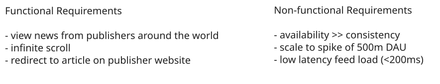
IG Requirements
The Set Up
Planning the Approach
Before diving into the design, I'll follow the framework by building sequentially through our functional requirements and using non-functional requirements to guide our deep dives. For Google News, we'll need to carefully balance scalability and performance to meet our high traffic demands.
Defining the Core Entities
I like to begin with a broad overview of the primary entities we'll need. At this stage, it's not necessary to know every specific column or detail - we'll focus on those intricacies later when we have a clearer grasp. Initially, establishing these key entities will guide our thought process and lay a solid foundation.
When communicating your entity design, focus on explaining the relationships between entities and their purpose rather than listing every attribute.
To satisfy our key functional requirements, we'll need the following entities:
- Article: Represents a news article with attributes like id, title, summary, thumbnail URL, publish date, publisher ID, region, and media URLs. This is our core content entity.
- Publisher: Represents a news source with attributes like id, name, URL, feed URL, and region. Publishers are the origin of our content.
- User: Represents system users with attributes like id and region (which may be inferred from IP or explicitly set). Even with anonymous users, we track basic information.
In the actual interview, this can be as simple as a short list like this. Just make sure you talk through the entities with your interviewer to ensure you are on the same page.
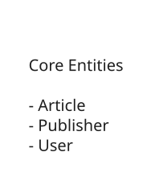
News Feed Entities
API or System Interface
The API is the main way users will interact with our news feed system. Defining it early helps us structure the rest of our design. I'll create endpoints for each of our core requirements.
For users to view an aggregated feed of news articles:
// Get a page of articles for the user's feed
GET /feed?page={page}&limit={limit}®ion={region} -> Article[]
We're starting with simple offset-based pagination for now, but this has performance issues for infinite scrolling. We'll improve this to cursor-based pagination in our deep dive to handle the scale and user experience requirements better.
For users to view a specific article we don't need an API endpoint, since their browser will navigate to the publisher's website once they click on the article based on the url field in the article object.
High-Level Design
We'll build our design progressively, addressing each functional requirement one by one and adding the necessary components as we go. For Google News, we need to handle both the ingestion of content from thousands of publishers and the efficient delivery of that content to millions of users.
1) Users should be able to view an aggregated feed of news articles from thousands of source publishers all over the world
Users need to see a personalized feed of recent news articles when they visit Google News. This involves two distinct challenges: collecting content from publishers and serving it to users efficiently.
We'll start with collecting data from publishers. To do this, we need a Data Collection Service that runs as a background process to continuously gather content from thousands of news sources:
- Data Collection Service: Polls publisher RSS feeds and APIs every 3-6 hours based on each publisher's update frequency.
- Publishers: Thousands of news sources worldwide that provide content via RSS feeds or APIs
- Database: Stores collected articles, publishers, and metadata
- Object Storage: Stores thumbnails for the articles
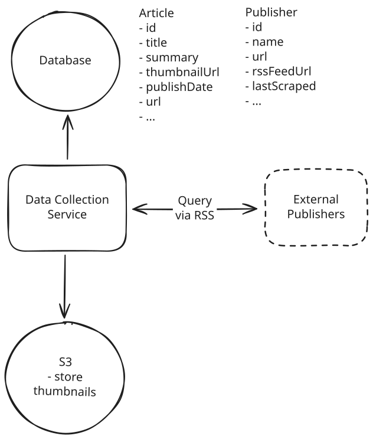
Data Collection
Our Data Collection Service workflow:
- Data Collection Service queries the database for the list of publishers and their RSS feed URLs before querying each one after another.
- Extracts article content, metadata, and downloads media files to use as thumbnails.
- Stores thumbnail files in Object Storage and saves article data with media URLs to the Database
What is RSS? RSS is a simple XML format that allows publishers to syndicate their content to other websites and readers. It's a common format for news aggregators like Google News because it's a simple, standardized format that many publishers already support. RSS feeds are also relatively lightweight to parse, making them a good choice for our system.
RSS works over HTTP. We just need to make a GET request to the RSS feed URL to get the content. The response is an XML document that contains the article title, link, and other metadata.
You may be thinking, why not just point directly to the url of the source image hosted by the publisher rather than going through all the effort to download it and store it in our own Object Storage? This is a good question. The answer is that we want to be able to serve the images to users quickly and efficiently, and not rely on the publisher's servers which may be slow, overloaded, or go down entirely. Additionally, we want to be able to standardize the quality and size of the images to ensure a consistent user experience.
Now that we have data flowing in, we need to serve it to users. For this, we'll add a Feed Service that handles user requests:
- Client: Users interact with Google News through web browsers or mobile apps, requesting their personalized news feed
- API Gateway: Routes incoming requests and handles authentication, rate limiting, and request validation before forwarding to appropriate services
- Feed Service: Handles user feed requests by querying for relevant articles based on the user's region and formatting the response for consumption
We choose to separate the Feed Service from the Data Collection Service for several key reasons: they have completely different scaling requirements (read-heavy vs write-heavy), different update frequencies (real-time vs batch), and different operational needs (user-facing vs background processing).
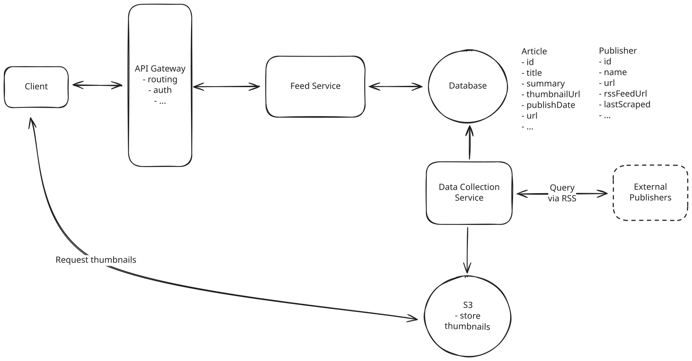
Query Articles
When a user requests their news feed:
- Client sends a GET request to /feed?region=US&limit=20
- API Gateway routes the request to the Feed Service
- Feed Service queries the Database for recent articles in the user's region, ordered by publish date
- Database returns article data including metadata and media URLs pointing to Object Storage
- Feed Service formats the response and returns it to the client via the API Gateway
2) Users should be able to scroll through the feed "infinitely"
Users expect to continuously scroll through their news feed without manual pagination. This requires implementing pagination that can handle loading new batches of content as users scroll.
Building on our existing architecture, we'll enhance the Feed Service to support simple offset-based pagination using page numbers and page sizes to fetch batches of articles.
When a user initially loads their feed:
- Client sends GET request to /feed?region=US&limit=20&page=1 (first page)
- Feed Service queries for the first 20 articles in the user's region, ordered by publish date
- Response includes articles plus pagination metadata (total_pages, current_page)
- Client stores the current page number for the next request
As the user scrolls and approaches the end of current content:
- Client automatically sends GET request to /feed?region=US&limit=20&page=2
- Feed Service calculates the offset (page-1 * limit) and fetches the next 20 articles
- Database query fetches articles with OFFSET and LIMIT clauses
- Process repeats as user continues scrolling through pages
This provides a simple foundation for infinite scrolling, though it has some limitations around performance and consistency that we'll address in our deep dives.
3) Users should be able to click on articles and be redirected to the publisher's website to read the full content
This is easy - the browser handles it for us. When users click an article, the browser redirects to the article URL stored in our database, taking them directly to the publisher's website to read the full content.
Sites like Google News are aggregators, and they don't actually host the content themselves. They simply point to the publisher's website when a user clicks on an article.
In real Google News, they would track analytics on article clicks to understand user behavior and improve recommendations. We consider this out of scope, but here's how it would work: article links would point to Google's tracking endpoint like GET /article/{article_id} which logs the click event and returns a 302 redirect to the publisher's site. This click data helps train recommendation algorithms and measure engagement.
Ok, pretty straightforward so far. Let's layer on a little complexity with our deep dives.
Potential Deep Dives
At this point, we have a basic, functioning system that satisfies the core functional requirements of Google News - users can view aggregated news articles, scroll through feeds infinitely, and click through to publisher websites. However, our current design has significant limitations, particularly around pagination consistency and feed delivery performance at scale. Let's look back at our non-functional requirements and explore how we can improve our system to handle 100M DAU with low latency and global distribution.
1) How can we improve pagination consistency and efficiency?
Our current offset-based pagination approach has serious limitations when new articles are constantly being published. Consider a user browsing their news feed during a busy news day when articles are published every few minutes. With traditional page-based pagination, if a user is on page 2 and new articles get added to the top of the feed, the content shifts down and the user might see duplicate articles or miss content entirely when they request page 3. This creates a frustrating user experience where the same articles appear multiple times or important breaking news gets skipped.
With thousands of publishers worldwide publishing articles throughout the day, we might see 50-100 new articles per hour during peak news periods. A user spending just 10 minutes browsing their feed could easily encounter this pagination drift problem multiple times, seeing duplicate articles or missing new content that was published while they were reading.
So, what can we do instead?
Approach
A much better approach is to use timestamp-based cursors instead of page numbers. When a user requests their initial feed, we return articles along with a cursor representing the timestamp of the last article in the response. For subsequent requests, the client includes this cursor, and we query for articles published before that timestamp using WHERE published_at < cursor_timestamp ORDER BY published_at DESC LIMIT 20.
This eliminates the pagination drift problem because we're always querying relative to a fixed point in time rather than a shifting offset. When new articles are published, they don't affect the pagination of older content since we're filtering based on the timestamp boundary. The cursor acts as a stable reference point that remains valid regardless of new content being added above it.
So long as we have an index on the published_at column, this query will be efficient.
Challenges
The main limitation of timestamp-based cursors emerges when multiple articles have identical timestamps, which happens frequently in news aggregation systems. Many publishers batch-import articles or use automated systems that assign the same timestamp to multiple articles published simultaneously. When we query for articles before a specific timestamp, we might miss articles that share the exact same timestamp as our cursor.
This creates gaps in the feed where users miss articles that were published at the same time as their cursor boundary. During high-volume news periods or when processing RSS feeds that batch-update multiple articles, this timestamp collision problem becomes more pronounced and can result in users missing significant amounts of content.
Approach
A more sophisticated solution combines timestamp and article ID to create a unique, totally-ordered cursor. We create a composite cursor like "2024-01-15T10:30:00Z_article123" that includes both the timestamp and the unique article ID. This ensures total ordering even when articles have identical timestamps, as the article ID provides the necessary tie-breaking mechanism.
The database query becomes WHERE (published_at, article_id) < (cursor_timestamp, cursor_id) ORDER BY published_at DESC, article_id DESC LIMIT 20. This uses SQL's tuple comparison capabilities to efficiently handle the composite ordering. We create a composite index on (published_at, article_id) to ensure these queries remain fast even with millions of articles.
This provides consistent pagination regardless of new content being added and handles timestamp collisions gracefully. The cursor remains stable and predictable, ensuring users never see duplicate articles or miss content due to pagination issues. Major platforms like Twitter and Instagram use similar composite cursor approaches for their timeline pagination.
Challenges
The primary trade-off is slightly increased complexity in cursor generation and parsing. The application needs to handle composite cursors that contain both timestamp and ID components, requiring careful encoding and decoding logic. The database queries are also marginally more complex, though modern databases handle tuple comparisons efficiently.
Storage costs increase slightly as cursors are longer, but this is negligible compared to the benefits. The composite index on (published_at, article_id) requires additional storage space, but this is a worthwhile investment for the query performance gains and pagination consistency it provides.
Approach
An even simpler solution that achieves the same result is to design article IDs to be monotonically increasing from the start. Instead of using random UUIDs, we can use time-ordered UUIDs (like ULIDs) or database auto-increment IDs that naturally increase with each new article. Since articles are collected chronologically, newer articles will always have higher IDs than older ones.
Now pagination becomes incredibly simple: we just use the article ID as our cursor. The query becomes WHERE article_id < cursor_id ORDER BY article_id DESC LIMIT 20. No composite cursors, no timestamp handling, and no complex tuple comparisons needed. The cursor is just a single ID value that the client passes back for the next page.
This eliminates timestamp collision issues entirely because each article gets a unique, ordered identifier regardless of when it was published. The database only needs a simple index on the article_id column, and the queries are as fast and simple as possible. Many modern systems use ULIDs (Universally Unique Lexicographically Sortable Identifiers) which combine the benefits of UUIDs with chronological ordering.
Challenges
The primary limitation is that this requires planning the ID strategy upfront during system design. If you're already using random UUIDs or timestamps as primary keys, migrating to monotonic IDs requires careful data migration. You also need to ensure your ID generation system can handle high throughput without creating bottlenecks.
For distributed systems, you need to coordinate ID generation across multiple instances to maintain ordering, though solutions like ULID generation or centralized ID services can handle this effectively. Despite these considerations, this is often the simplest and most performant solution for chronological data like news feeds.
By implementing cursor-based pagination with monotonically increasing article IDs, we ensure consistent pagination that handles new content gracefully while maintaining the sub-200ms latency requirement for feed requests.
2) How do we achieve low latency (< 200ms) feed requests?
Our high-level design currently queries the database directly for each feed request, which creates significant performance bottlenecks at scale. With 100 million daily active users, each potentially refreshing their feed 5-10 times per day, we're looking at 500 million to 1 billion feed requests daily. Even with efficient indexing, querying millions of articles and filtering by region for each request could push response times well beyond our 200ms target.
Pattern: Scaling Reads
News aggregators like Google News showcase extreme scaling reads scenarios with billions of feed requests but relatively few article writes. This demands aggressive caching of regional feeds, and pre-computed article rankings. The key is that news consumption vastly outweighs news creation, making read optimization critical for sub-200ms response times.
How can we make this more efficient?
Approach
When we think about low latency requests, the first thing that should come to mind is caching.
We can cache recent articles by region in Redis (or any other in-memory cache) with a time-to-live (TTL). We maintain separate cache keys for each region like feed:US, feed:UK, etc., storing the latest articles as sorted sets ordered by timestamp. When users request their feed, we first check Redis for cached articles and only fall back to the database on cache misses. Importantly, the TTL here exists on the entire feed, not on individual articles (not possible with redis sorted sets).
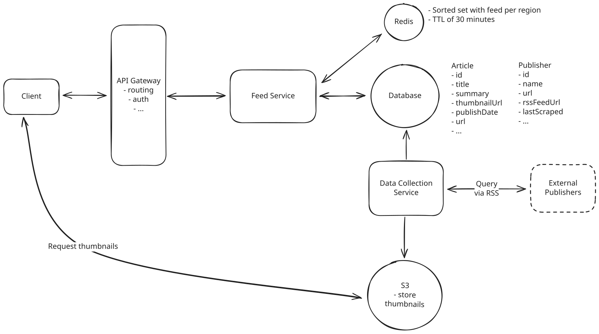
Redis Cache
We set a TTL of 30 minutes on these cache entries, ensuring that the cache stays reasonably fresh while reducing database load significantly. The cache hit rate should be very high since most users request recent articles, and the Redis response times are typically under 200ms. This can handle much higher request volumes while maintaining acceptable performance for most users.
This follows a classic cache-aside pattern: on cache miss, we query the database for the regional feed, cache the results in Redis with the TTL, and return the data to the user. Subsequent requests for the same region will hit the cache until it expires.
Given we are using a Redis sorted set, our pagination still works effectively. We can query for the next N articles after a given score using the ZREVRANGEBYSCORE command with the cursor value.
Challenges
While this reduces database load significantly, cache misses still require expensive database queries that can violate our latency requirements. The TTL approach means users might not see new articles for up to 30 minutes, which violates our freshness requirement for a news platform where timely content delivery is crucial.
During cache expiration periods, all users requesting feeds for a region hit the database simultaneously, creating thundering herd problems where hundreds of concurrent expensive queries overwhelm the database. This results in periodic performance degradation that can last several minutes while caches are being repopulated. The user experience becomes inconsistent, with some requests being fast (cache hits) and others being very slow (cache misses or during cache refresh periods).
Approach
The most effective solution pre-computes and caches feeds for each region using Change Data Capture (CDC) for immediate updates. We maintain pre-computed feeds in Redis as sorted sets containing article IDs and essential metadata, organized by region. When new articles are published, CDC triggers immediately update the relevant regional caches without waiting for TTL expiration.
Here's how the system works: our Data Collection Service stores new articles in the database, which triggers CDC events. These CDC events are consumed by Feed Generation Workers that immediately determine which regional feeds need updates based on the article's region and relevance. They then add the new article to the appropriate Redis sorted sets with its timestamp as the score, maintaining the chronological ordering automatically.
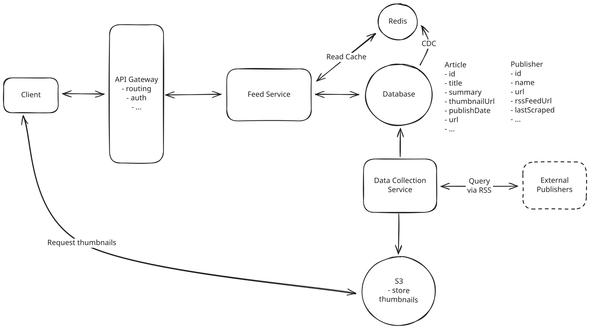
Real-time Cached Feeds with CDC
With the TTL no longer relevant, we need to find another way to prevent unbounded cache growth. What we can do instead is maintain only the most recent N articles (typically 1,000-2,000) per regional feed. When adding new articles, we use Redis ZADD to insert the article with its timestamp score, then immediately call ZREMRANGEBYRANK with negative indices to remove the oldest articles beyond our limit. This ensures each regional cache stays at a manageable size while providing enough content for users to scroll through several pages.
For feed requests, we simply read from the pre-computed Redis sorted sets using ZREVRANGE operations that complete in under 5ms. If we need full article metadata, we can either store it directly in the cache or use a secondary cache lookup with the article IDs. This ensures sub-200ms response times consistently while providing immediate content freshness.
Challenges
The key trade-off is additional complexity in the feed generation pipeline and increased infrastructure requirements. We need to maintain CDC infrastructure, message queues, and worker processes to keep the caches updated. The system becomes more complex to operate and debug, requiring careful monitoring of the entire pipeline.
Storage costs increase as we're essentially duplicating article data across regional caches, though this is manageable with proper size limits for older content. We also need to handle edge cases like cache corruption or worker failures, requiring robust error handling and cache rebuilding mechanisms. Despite these complexities, this approach is used by major news platforms and social media companies because it provides the best balance of performance and freshness.
3) How do we ensure articles appear in feeds within 30 minutes of publication?
Our current approach of polling publisher RSS feeds every 3-6 hours creates a big problem: by the time we discover breaking news, users have already learned about it from social media, push notifications, or other news sources. In today's fast-paced news environment, a delay of several hours makes our news feed feel stale and irrelevant. When a major story breaks - whether it's a natural disaster, political development, or market-moving announcement - users expect to see it in their feeds within minutes, not hours.
Most of the time when this question is asked, especially when asked of mid-level or junior candidates, the interviewer will ask you to "black box" the ingestion pipeline. I choose to go over it here because it is not uncommon for more senior candidates to be asked how this would be implemented, at least at a high level.
Here's how we can dramatically reduce this discovery time.
Approach
The most straightforward solution is to dramatically increase our RSS polling frequency while implementing intelligent scheduling based on publisher characteristics. Instead of checking all feeds every 3-6 hours, we implement a tiered polling system where high-priority publishers (major news outlets, breaking news sources) get polled every 5-10 minutes, medium-priority sources every 30 minutes, and low-priority sources (weekly magazines, niche publications) every 2-3 hours.
Our Data Collection Service maintains a publisher priority in the database to track each source's historical publishing patterns. Publishers like CNN, BBC, or Reuters that publish dozens of articles daily and frequently break major stories get classified as "high-priority" and added to a fast polling queue. The system uses separate worker processes for each priority tier, with high-priority workers running continuous polling loops that sleep for only 5-10 minutes between cycles.
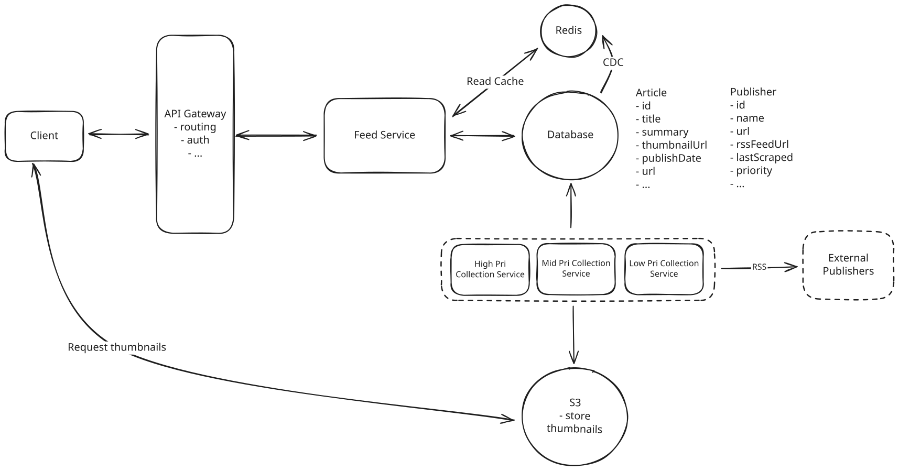
Increased RSS Polling Frequency
The polling workflow works like this:
- High-priority workers query the database for publishers marked as "high-priority" and poll their RSS feeds every 5-10 minutes, making HTTP GET requests to each feed URL.
- When new articles are detected (by comparing article GUIDs or publication timestamps against our database), they're immediately processed by our content ingestion pipeline.
- The workers track the last-modified headers and ETags from RSS responses to avoid unnecessary processing when feeds haven't changed.
Challenges
This creates significant infrastructure challenges and cost implications. With 10,000+ publishers and high-priority sources being polled every 5-10 minutes, we're now making 100,000+ HTTP requests per hour instead of our current 2,000-3,000. This increases our server costs substantially and risks overwhelming smaller publishers' servers with too many requests, potentially getting our IP addresses blocked.
This also doesn't solve the fundamental limitation that we're still reactive rather than proactive. Even with 5-minute polling, breaking news could still take up to 5 minutes to appear in our system, plus additional processing time. During major news events when every minute matters, this delay can still make our platform feel slow compared to real-time sources like social media.
Maybe most importantly, not all publishers have RSS feeds! Many newer publishers have either limited, or no RSS feeds at all.
Approach
To capture content from publishers that don't provide RSS feeds or update them infrequently, we need to implement web scraping that programmatically visits news websites and extracts new articles directly from their HTML structure. Our scraping system maintains a database of website patterns and CSS selectors for identifying article content on major news sites.
The actual scraping infrastructure is very similar to our web crawler breakdown. We have a crawler that navigates to publisher homepages and category pages, looking for new article links - searching for elements with classes like "article-headline", "story-link", or "news-item" and extracting URLs, titles, and publication timestamps. We'll abstract much of this away in our diagram since it's not the core focus of this problem.
For each target website, our scrapers maintain a fingerprint database of previously seen articles (using URL hashes or content checksums) to identify new content. When new articles are detected, the scraper follows the article URLs to extract full content, including headline, body text, author, and publication date. The extracted content gets normalized into our standard article format and fed into the same processing pipeline as RSS-sourced content.
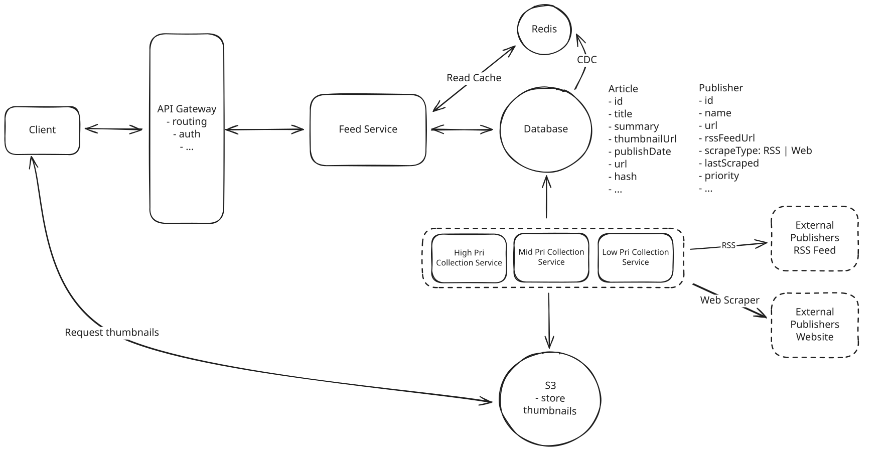
Intelligent Web Scraping
Just like with the RSS approach, we need an intelligent scheduling where high-traffic news sites get scraped every 10-15 minutes, while smaller sites might only be checked hourly.
This way we combine the best of both worlds - we get the freshness of RSS, but we also get the coverage of web scraping.
Challenges
Web scraping requires significant maintenance overhead as websites frequently change their HTML structure, breaking our extraction logic. It's also slower and less reliable than RSS parsing, with legal concerns around content extraction from sites that prohibit scraping.
However, we use scraping strategically as a fallback for publishers without RSS feeds, not as our primary method. This hybrid approach - RSS when available, scraping when necessary - gives us comprehensive coverage while keeping operational complexity manageable.
Approach
The optimal solution flips our model from pull-based to push-based by implementing webhooks where publishers notify us immediately when they publish new content. If we assume we really have 100M DAU, then publishers should be clamoring to get their articles on our platform.
We can build a webhook endpoint at POST /webhooks/article-published that publishers can call the moment they publish an article, containing the article metadata or even the full content payload. This way, instead of us trying to find new articles, we can rely on them telling us about them!
Our webhook infrastructure consists of a high-availability endpoint that can handle sudden traffic spikes when major stories break and multiple publishers notify us simultaneously. The endpoint validates incoming webhook payloads, extracts article data, and immediately queues the content for processing through our standard ingestion pipeline. We'd need to implement webhook authentication using shared secrets or API keys to prevent spam and ensure content authenticity.
For publishers who implement our webhooks, we can process their content within seconds of publication. The webhook payload includes essential metadata like article URL, title, publication timestamp, and optionally the full article content. Our system immediately triggers cache updates for relevant regional feeds, ensuring the new content appears in user feeds within 30 seconds of publication.
We'll still keep the fallback RSS polling and web scraping for publishers who don't support webhooks, creating a hybrid system that provides real-time updates where possible and regular polling elsewhere.
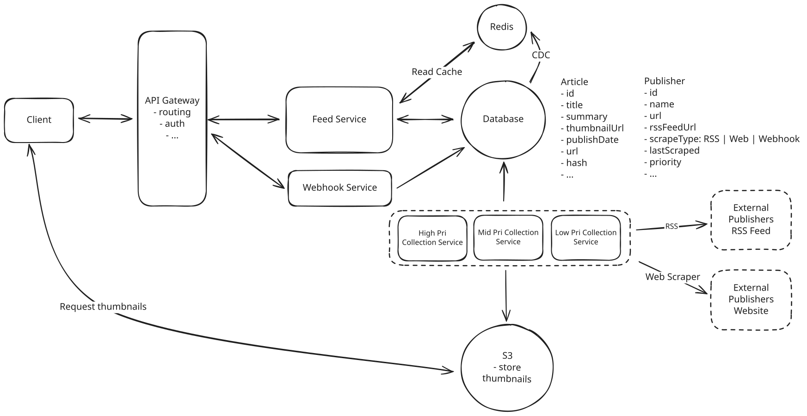
Publisher Webhooks with Fallback Polling
Challenges
The primary limitation is that webhooks require coordination and buy-in from publishers, which we can't implement unilaterally like polling or scraping approaches. Many smaller publishers lack the technical resources to implement webhook integrations, and some may be reluctant to add external dependencies to their publishing workflow.
This question is perfect for an informed back and forth with your interviewer. Start by asking them questions and building your way up. Can I black box the ingestion pipeline? If not, do our publishers maintain RSS feeds? Given we have such high traffic, can we assume publishers would be willing to implement webhooks to tell us when new articles are published?
By implementing a hybrid approach that combines frequent RSS polling for cooperative publishers, intelligent web scraping for sites without feeds, and webhooks for premium real-time partnerships, we can ensure that breaking news appears in user feeds within minutes rather than hours.
4) How do we handle media content (images/videos) efficiently?
Since we link users to publisher websites rather than hosting full articles, our media requirements are much simpler - we only need to display thumbnails in the news feed to make articles visually appealing and help users quickly identify content. However, with 100M+ daily users viewing feeds, even thumbnail delivery needs to be fast and cost-effective.
When we collect articles via RSS or scraping, we extract the primary image URL from each article and download a copy to generate better thumbnails. We need our own copies because publisher images can be slow to load, change URLs, or become unavailable, which would break our feed experience.
Let's analyze our options for thumbnail storage and delivery.
Approach
Store thumbnail images directly in our database as binary data alongside article metadata. When articles are collected, we download the primary image, resize it to thumbnail dimensions (e.g., 300x200), and store the binary data in the database.
This is so bad we don't even do it in our high level design. But it's worth adding here just to illustrate why it's such a bad idea in the first place.
Challenges
Even small thumbnails (20-50KB each) create significant database performance issues when multiplied by millions of articles. Database queries become slow, backups are enormous, and the database server's memory gets consumed by image data instead of being available for faster queries. This doesn't scale beyond a few thousand articles.
Databases are meant to store structured data, not binary data. If you have large binary blobs, always store them in object storage!
Approach
Store thumbnails in Amazon S3 and reference their URLs in our database. During article collection, we download the original image, generate a thumbnail (300x200, sized for web), upload it to S3, and store the S3 URL in our article metadata.
This separates concerns properly - S3 handles file storage while our database focuses on structured data. Thumbnails load directly from S3 to users' browsers, reducing load on our application servers.
This is what we currently have in our high level design.
Challenges
Global users experience high latency when loading thumbnails from distant S3 regions. S3 egress costs add up with millions of thumbnail views daily. No support for different screen densities (retina vs standard displays) or slow network connections.
Approach
To avoid global users experiencing high latency when loading thumbnails from distant S3 regions, we can use a CDN to serve the thumbnails.
Store thumbnails in S3 and serve them through CloudFront CDN for global distribution. We generate multiple thumbnail sizes (150x100 for mobile, 300x200 for desktop, 600x400 for retina displays) and use HTML srcset attributes or client-side logic to request the appropriate version based on device and screen density.
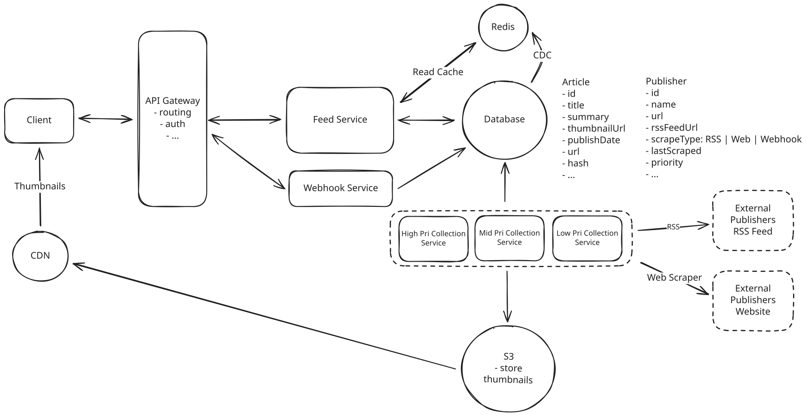
S3 + CloudFront CDN with Multiple Sizes
CloudFront caches thumbnails at edge locations worldwide, ensuring sub-200ms load times globally.
Challenges
The downside is higher storage costs for multiple thumbnail variants, but this is minimal compared to the performance gains. The CDN caching reduces S3 requests by over 90%, significantly lowering overall costs while providing an optimal user experience.
By implementing S3 storage with CloudFront CDN distribution and multiple thumbnail sizes, we provide fast thumbnail loading globally while keeping storage costs minimal. Since users click through to publisher sites for full articles, we only need to improve the feed browsing experience with quick-loading, appropriately-sized thumbnails.
5) How do we handle traffic spikes during breaking news?
Breaking news events create massive traffic spikes that can overwhelm traditional scaling approaches. When major events occur - elections, natural disasters, or celebrity news - our normal traffic of 100M daily active users can spike to 10M concurrent users within minutes. During these events, everyone wants the latest updates simultaneously, creating a perfect storm of read traffic that can bring down unprepared systems.
Realistically, 10M concurrent users is a lot and probably an overestimate, but it makes the problem more interesting and many interviewers push you to design for such semi-unrealistic scenarios.
Fortunately, Google News has a natural advantage that makes scaling much more manageable than other systems: news consumption is inherently regional. Users primarily want fast access to local and national news from their geographic region. While some users do seek international news, the vast majority of traffic focuses on regional content - Americans want US news, Europeans want EU news, and so on.
This means we can deploy infrastructure close to users in each region, and each regional deployment only needs to handle the content and traffic for that specific area. Rather than building one massive global system, we can build several smaller regional systems that are much easier to scale and operate.
We'll still assume that each regional deployment needs to handle 10M concurrent users making feed requests. So let's evaluate each component in our design asking: what are the resource requirements at peak, does the current design satisfy the requirement, and if not, how can we scale the component to meet the new requirement?
Feed Service (Application Layer)
Our Feed Service needs to handle 10M concurrent users making feed requests. Even if each user only refreshes their feed once during a breaking news event, that's still 10M requests that need to be processed quickly. A single application server can typically handle 10,000 - 100,000 concurrent connections depending on the response complexity and hardware.
So one server, no matter how powerful, won't cut it.
The solution is horizontal scaling with auto-scaling groups. We deploy multiple instances of our Feed Service behind load balancers and use cloud auto-scaling to automatically provision new instances when CPU or memory utilization exceeds certain thresholds. With proper load balancing, we can distribute the 10M requests across dozens of application server instances, each handling a manageable portion of the traffic.
The key advantage is that Feed Services are stateless, making horizontal scaling straightforward. We can spin up new instances in seconds and tear them down when traffic subsides, paying only for resources during high-traffic periods.
Database Layer
Our database faces the most significant scaling challenge during traffic spikes. Even with efficient indexing, a single database instance cannot handle 10M concurrent read requests. The I/O subsystem, network bandwidth, and CPU resources all become bottlenecks that cannot be overcome through hardware upgrades alone.
Good news is we've already got our cache which should drastically reduce the load on our database. All read requests to fetch the feed should hit the cache, meaning our scale challenges are actually offloaded from the database to the cache.
Cache Layer (Redis)
Our Redis cache layer becomes critical during traffic spikes as it serves as the primary source for pre-computed regional feeds. With 10M users requesting feeds simultaneously, even our tuned cache queries could overwhelm a single Redis instance which can only serve ~100k requests per second.
The solution is read replicas. Each regional Redis master gets multiple read replicas to distribute the query load. Since we only have ~2,000 recent articles per region, each master can easily store all the regional content without complex sharding - the scaling challenge is purely about read throughput.
What if I'm not using Redis? No worries! The concept is the same. Use consistent hashing to shard the data across multiple instances and ensure each instance has a replica or two to handle the read load and failover.
Let's work through the scaling math. With 10M concurrent users during traffic spikes and each Redis instance handling roughly 100k requests per second, we need 100 total Redis instances to handle the load.
Realistically, we don't need this many per region. Some regions are more popular than others, and we can scale up and down based on demand.
Setting this up is straightforward: write operations like new articles and cache updates go to the master, while read operations for feed requests are load-balanced across all replicas using round-robin or least-connections algorithms. With Redis Sentinel managing the cluster, if the master fails, one replica gets promoted to master automatically. The replication lag is typically under 200ms for Redis, which is perfectly acceptable for news feeds where users won't notice such small delays.
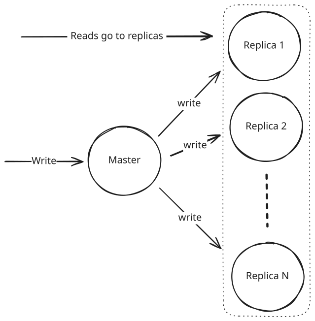
Redis Scaling
This handles our traffic spikes efficiently while keeping operational complexity manageable. During breaking news events, we can quickly spin up additional read replicas in the affected regions to handle increased load, then scale them back down when traffic normalizes.
This regional approach provides users with sub-50ms cache response times from their nearest cluster, traffic spikes in one region don't affect others, and we can scale each region independently based on local usage patterns. During breaking news events, the affected regions can add more read replicas while others remain at baseline capacity.
Bonus Deep Dives
Many users in the comments called out that when they were asked this question, they were asked about both categorization and personalization. I figured, given the interest, it was worth amending the breakdown to include these topics.
6) How can we support category-based news feeds (Sports, Politics, Tech, etc.)?
Our current design only supports regional feeds like feed:US and feed:UK, but real news platforms organize content into categories like Sports, Politics, Technology, Business, and Entertainment. Users expect to browse specific topics rather than just getting a mixed regional feed.
Google News displays 25+ categories, each containing hundreds of daily articles. With 100M daily users, we might see up to 10M requests for specific categories during peak hours - Sports during game seasons, Politics during elections, or Tech during major product launches. Our current regional cache structure can't handle this granular filtering efficiently.
Consider what happens when a major sporting event occurs and 10M users simultaneously request Sports feeds. Our system would need to query the database for sports articles, filter results, and generate responses for each request. Even with regional caching, we'd be hitting the database millions of times for the same Sports content, creating performance bottlenecks.
Approach
The simplest solution adds a category column to our Article table and modifies our Feed Service to filter by category in real-time. When users request /feed?region=US&category=sports, the service queries the database with WHERE region = 'US' AND category = 'sports' ORDER BY published_at DESC LIMIT 20.
Building this requires minimal changes to our existing architecture. We add category extraction during article ingestion - either from RSS feed metadata, webpage structure analysis, or simple keyword matching against article titles and content. Publishers often include category information in their RSS feeds using tags like <category>Sports</category>, making this extraction straightforward for many sources.
Our Feed Service gets enhanced with category filtering logic. The API endpoint becomes more flexible, supporting requests like /feed?region=US&category=sports or /feed?region=UK&category=technology. The database query uses a composite index on (region, category, published_at) to ensure efficient filtering and sorting.
Challenges
This creates severe performance problems at scale. Every category request requires a database query, meaning 50M peak requests translate to 50M database operations. Even with proper indexing, our database becomes the bottleneck as concurrent queries compete for resources and connection pools get exhausted.
The caching story becomes problematic too. We can't cache category results effectively because each category-region combination needs separate cache management. With 25 categories across 10 regions, we're managing 250 different cache keys, each with different invalidation patterns and traffic volumes. Cache misses become expensive as they trigger database queries for specific category filtering.
Approach
A more scalable approach pre-computes and caches feeds for each category-region combination in Redis sorted sets. Instead of real-time database filtering, we maintain separate sorted sets like feed:sports:US, feed:politics:UK, and feed:technology:CA that contain pre-filtered, chronologically ordered articles.
The architecture builds on our existing regional feed caching but expands the granularity. During article ingestion, our Feed Generation Workers categorize each article and update multiple Redis sorted sets simultaneously. When a sports article gets published in the US, it gets added to both feed:US (regional feed) and feed:sports:US (category-specific feed) using the article ID as the member and timestamp as the score.
Feed requests become blazing fast since they're simple Redis sorted set operations. A request for /feed?region=US&category=sports&limit=20 translates to ZREVRANGE feed:sports:US 0 19, which completes in under 5ms. Users get sub-200ms response times consistently, even during traffic spikes when millions of users are browsing specific categories.
Challenges
The main limitation is memory usage and cache management complexity. With 25 categories across 10 regions, we're maintaining 250+ separate sorted sets instead of 10. Each category feed contains roughly 1,000-2,000 articles, significantly increasing our Redis memory requirements compared to simple regional feeds.
Cache invalidation becomes more complex as articles need to be removed from multiple sorted sets when they expire. A single article might belong to both regional and category feeds, requiring coordinated cleanup operations across multiple cache keys. During high publishing volumes, cache maintenance operations can impact read performance.
Approach
In my opinion, the above is overkill. We can just modify our regional feeds to include category information in each cached article, then filter results in-memory when users request specific categories.
When we cache articles in feed:US, instead of storing just article IDs as members, we store complete article metadata as JSON strings. Each cached article includes all the information needed for category filtering - title, description, URL, category, region, and publication timestamp.
A typical cache entry looks like this:
{
"id": "123",
"title": "NBA Finals Game 7 Results",
"description": "Warriors defeat Celtics in thrilling finale",
"url": "https://espn.com/nba/finals/game7",
"category": "sports",
"region": "US",
"published_at": "2024-06-21T22:30:00Z"
}When users request category-specific feeds like /feed?region=US&category=sports, our Feed Service retrieves the entire regional cache using ZREVRANGE feed:US 0 999 to get the most recent 1,000 articles. The service then filters this data in-memory, selecting only articles where category === "sports" before returning the requested page size to the user.
The filtering logic is straightforward and fast. Reading 1,000 cached articles from Redis takes under 10ms, and filtering them in application memory adds just 1-2ms of processing time. For categories with decent representation, we can easily find 20-50 relevant articles from the regional cache without hitting the database.
This requires minimal changes to our existing architecture. Our CDC pipeline already populates regional caches, so we just need to modify the cached data format to include category metadata. The Feed Service gets enhanced with simple filtering logic that processes cached results before pagination.
Memory usage stays reasonable since we're not duplicating articles across multiple caches. Each article exists once in its regional cache, regardless of how many categories users might request. Cache management remains simple with our existing size limits and TTL policies.
This is an example where the best solution is often the most straightforward one.
7) How do we generate personalized feeds based on user reading behavior and preferences?
Our current system delivers the same regional feed to every user in a geographic area, but modern news platforms provide personalized experiences. Users expect feeds that prioritize topics they care about, publishers they trust, and content similar to articles they've previously engaged with.
The actual ranking/scoring function itself is usually a machine learning model, but we can abstract this away for our purposes. This isn't an MLE interview after all!
Approach
The simplest approach scores articles against user preferences in real-time during feed requests. The system maintains user profiles with reading history, topic preferences, and behavioral data, then runs recommendation algorithms to rank content by relevance when users request feeds.
Implementation involves tracking user behavior (clicks, reading time, shares) and explicit preferences (subscribed topics, preferred publishers). When users request feeds, a recommendation service scores recent articles against their profile using factors like topic match, publisher preference, and content freshness. Collaborative filtering identifies patterns like "users who read A and B also engage with C" to surface similar content.
Challenges
Real-time scoring destroys our latency requirements. Scoring thousands of articles against 100M user profiles means billions of calculations per hour, taking several seconds instead of our target 200ms. The computational overhead becomes prohibitively expensive, and performance degrades catastrophically during traffic spikes when millions of users need simultaneous personalization.
Approach
Pre-compute personalized feeds for active users in Redis sorted sets like feed:user:12345. Background workers continuously update these feeds as new articles arrive, scoring content by relevance to each user's interests and reading patterns rather than chronological order.
The system combines explicit preferences (subscribed topics, preferred publishers) with behavioral signals (clicks, reading time, shares) to build user profiles. When articles get published, recommendation workers identify relevant users and add articles to their personalized feeds with appropriate relevance scores.
Active daily users get dedicated personalized caches, while inactive users get feeds generated on-demand from category caches. Cache updates happen incrementally - user preferences evolve gradually as they engage with different topics.
Challenges
Memory requirements explode with dedicated caches for millions of users. Storing 1,000 articles per user for 50M active users means 50 billion cache entries - 200-500x larger than category caching. Cache staleness creates UX problems when interests change rapidly, and personalized feeds might miss globally important breaking news that everyone should see.
Approach
The optimal solution stores lightweight user preference vectors (just kilobytes per user) and assembles personalized feeds on-demand by mixing pre-computed category feeds. Instead of 100M user caches, we maintain a few hundred category caches and personalize through intelligent assembly.
A user interested in technology gets a feed assembled from 60% feed:technology:US, 30% feed:business:US, and 10% feed:trending:US. The mixing algorithm uses their preference vector to determine optimal ratios. During breaking news, the system temporarily boosts trending content weights while maintaining personal preferences.
This builds on our existing category cache infrastructure, reducing memory requirements by 100x while delivering relevant personalized experiences. Machine learning adjusts mixing ratios based on engagement patterns, and fallback strategies maintain performance during high traffic.
Challenges
Reduced personalization depth compared to full recommendation engines. Assembly algorithms need careful tuning to balance personalization with content diversity - very narrow interests might miss important global stories, while broad interests might feel generic.
By implementing hybrid personalization with dynamic feed assembly, we deliver personalized news experiences that scale to 100M+ users while maintaining our sub-200ms response time requirements. The approach balances individual user interests with editorial importance and trending content, ensuring users get both relevant and globally significant news in their feeds.
Test Your Knowledge
Answer the question below to find your gaps.
Question 1 of 15
Why do news aggregators like Google News download and store their own copies of publisher thumbnails rather than linking directly to publisher images?
1
Consistent load times and availability
2
SEO optimization
3
Copyright protection
4
Image compression